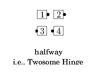
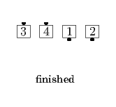
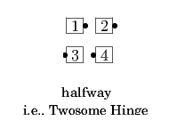
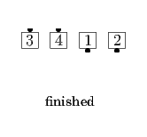
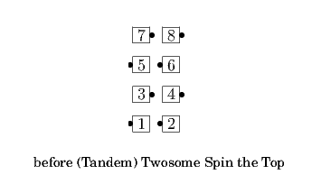
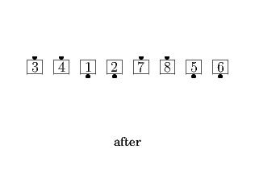
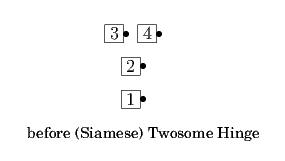
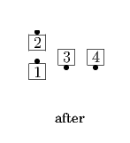

(Couples / Tandem / Siamese) Twosome <anything>
From formations with pairs of adjacent dancers facing the same direction: Do the given call with each pair of dancers acting as a unit, as in As Couples, Tandem, or Siamese, but with the members of each pair moving individually and maintaining a constant displacement from each other (staying the same distance and the same direction from each other, e.g., if one is closer to the caller and the other further from the caller, they remain so). The pairs may start as any mix of couples and tandems. If the pairing is ambiguous, the concept must be specified as "Couples Twosome", "Tandem Twosome", or "Siamese Twosome" as appropriate. If the pairing is unambiguous, "Twosome" alone is sufficient. As in As Couples, Tandem, and so on, the dancers in each pair remain adjacent throughout the call and do not allow any other dancers to pass between them. Note: If the call causes a pair to turn an odd number of quarters (e.g., 1/4, 3/4), a couple will become a tandem, and vice versa.
 







© Copyright 2004-2017 Vic Ceder and CALLERLAB Inc., The International Association of Square Dance Callers. Permission to reprint, republish, and create derivative works without royalty is hereby granted, provided this notice appears. Publication on the Internet of derivative works without royalty is hereby granted provided this notice appears. Permission to quote parts or all of this document without royalty is hereby granted, provided this notice is included. Information contained herein shall not be changed nor revised in any derivation or publication.